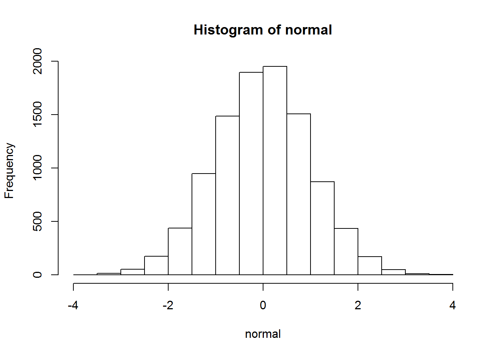

Seminar 1
First of all, you can use R as a simple calculator. Just write in a command line
2+2## [1] 4or something more complicated
3*(3+3)^3## [1] 648Functions
For more complicated operations you can use functions. They have some input in parhenteses and some output. Of course, there is some algorithm behind the function.
log(100, base = 10)## [1] 2Moreover, you can use output from functions as input for another function:
sqrt(log(100, base = 10))## [1] 1.414214It is impossible to know all functions, what kind of input they need, which parameters you need to set etc. Therefore, you can read help for functions that you want to apply by using ?
?logIf you don’t know exact function you can try to use two questions signs ?? to search in help:
??logarithmVariables
Important feature of programming is ability to memorize your calculations in variables. You can assign value to variable with this sign: <- (you can use shortcut “ALT and -”):
a <- 2
b <- a+2
b## [1] 4You can compare different values:
b == a #is equal?## [1] FALSEb != a #is not equal? ! is usually stands for "not"## [1] TRUEb > a## [1] TRUEb < a## [1] FALSEb >= a## [1] TRUEb <= a## [1] FALSEImportant! If you want to compare b and a you must use b == a, not b = a. Otherwise it is assignment:
b## [1] 4b = a
b## [1] 2You can assign different types of values into variables. Untill now we used only “numeric” variables:
class(b)## [1] "numeric"We can do the same with strings of characters:
c <- "I love R!"
c## [1] "I love R!"class(c)## [1] "character"What if we do arithmetic operations on different types of data?
#b+cAnother important type of values is TRUE or FALSE:
d <- TRUE
e <- FALSE
d == e## [1] FALSEIt is the same as
d <- T
e <- F
d == e## [1] FALSEf <- d == e
f == e## [1] TRUEOne more important data type is NA (for missing values):
n <- NA
n## [1] NAIt is not a string, not an empty, not a zero:
n == "NA"## [1] NAn == ""## [1] NAn == 0## [1] NAn == NA #Ha-HA! Use is.na() instead## [1] NAis.na(n)## [1] TRUELogical operators
It is time to introduce logical operators! They work for numeric and logical vectors
d <- T
e <- F
!d## [1] FALSE!e## [1] TRUEd & e #logical AND## [1] FALSEd | e #logical OR## [1] TRUEVectors
You can collect several values in one variable with atomic vectors. You need to contaginate your values with function c():
v <- c(1,4,-5, 23,2, 0,4)
v## [1] 1 4 -5 23 2 0 4Otherwise, we can create a vector form sequence of numbers:
vinc <- 1:10
vinc## [1] 1 2 3 4 5 6 7 8 9 10vdec <- 10:1
vdec## [1] 10 9 8 7 6 5 4 3 2 1Moreover, we can bind vectors with c() function:
vbig <- c(v, vinc, vdec)
vbig## [1] 1 4 -5 23 2 0 4 1 2 3 4 5 6 7 8 9 10 10 9 8 7 6 5
## [24] 4 3 2 1Let’s calculate mean!
mean (v)## [1] 4.142857You can change vector:
v[1] = 100
v## [1] 100 4 -5 23 2 0 4Important In most programming languages (except for R and MATLAB) a vector starts from zero index. But not in R! Therefore, we have really change the first value of the vector, not the second one.
Atomic vectors can be: - numeric
vn <- c(1,2,5)- logical
vl <- c(T, F, T)- character
vc <- c("Hello, ", "world!")What is important to know about character vector, is the fact that you can easily create characters from nums:
vnc <- as.character(vn)
vnc## [1] "1" "2" "5"and sometimes vice versa, but not always (be careful with NA!):
as.numeric(vnc)## [1] 1 2 5vnc[2] = "ha-ha"
as.numeric(vnc)## Warning: NAs introduced by coercion## [1] 1 NA 5You will work with indeces very often. Let’s learn some features about that:
n = 3
v[n] # n-th element of vector## [1] -5v[-n] # all elements except for n## [1] 100 4 23 2 0 4v[2:6] # part of the vector: 2nd, 3rd, 4th, 5th and 6th values ## [1] 4 -5 23 2 0v[c(1,3,5)] #part of the vector with vector of indeces## [1] 100 -5 2Moreover, you can take part of your vector depending on values:
v[v>2]## [1] 100 4 23 4v[v<mean(v)]## [1] 4 -5 2 0 4It is important to understand what do you actually do there: you create a vector of TRUE and FALSE by v<mean(v): FALSE, TRUE, TRUE, FALSE, TRUE, TRUE, TRUE. Then you use these TRUE and FALSE as indeces to take values from the old vector.
TASK Many functions will return NA by default if an input contains NA:
vna <- c(2, 4, 3, 0, 6, NA, 4, 2, NA)
vna## [1] 2 4 3 0 6 NA 4 2 NAmean(vna)## [1] NATry to find a way to calculate mean of the vector omitting NA.
Hint 1: There are more than one ways to do that Hint 2: by default is important! Hint 3: vna != NA is not working. Use is.na() function instead
#mean(vna[!is.na(vna)])
#mean(vna, na.rm = T)Other operations with vectors
You can sum vectors and do other arithmetic operations with it
v1 <- c(2,3,4)
v2 <- c(2,1,0)
v1+v2## [1] 4 4 4v1-v2## [1] 0 2 4v1*v2## [1] 4 3 0v1/v2## [1] 1 3 Infv1^v2## [1] 4 3 1You can do arithmetic operations with vectors and constants:
v1 +3## [1] 5 6 7v1^3## [1] 8 27 64Recycling rule: if two vectors have different length, the shorter one will be recycled in order to match the longer vector:
vshort <- c(1:3)
vlong <- c(1:9)*10
vshort## [1] 1 2 3vlong## [1] 10 20 30 40 50 60 70 80 90vshort+vlong## [1] 11 22 33 41 52 63 71 82 93TASK Function rnorm() generates vector of numbers randomly sampled from standard normal distribution (i.e., mean = 0, sd = 1) - we will cover what a standard normal distribution is later:
normal <- rnorm(10000)
hist(normal) Create a new vector normal with length = 1000 and normally distributed values, but with mean = 100 and sd = 15. Check that that with hist(). Check that with mean() and sd() functions Hint as usual, there are more than one way to do that.
#normal <- rnorm(1000)*15+100
#normal <- rnorm(1000, mean = 100, sd = 15)
#mean(normal)
#sd(normal)Next step: create new vector from vector normal with only values higher than 105. Check the results with hist() function.
Matrices
Matrix is an extention of vector idea: you can handle elements of one type (numeric, characters, boolean (T or F)), but also has two dimensions:
A <- matrix(1:20, nrow=5,ncol=4)
A## [,1] [,2] [,3] [,4]
## [1,] 1 6 11 16
## [2,] 2 7 12 17
## [3,] 3 8 13 18
## [4,] 4 9 14 19
## [5,] 5 10 15 20We have two indeces in a matrix:
A[2,3] #where 2 is row, 3 is column## [1] 12A[2:4, 1:3]## [,1] [,2] [,3]
## [1,] 2 7 12
## [2,] 3 8 13
## [3,] 4 9 14However, matrix is not very popular in R (compared to MATLAB). Instead of matrices almost everyone uses dataframe. We will return to them later. Hint: Extention of matrix to more than 2 dimensions is called array.
Lists
As every normal programming language (like python) R has lists.
li <- list(1,3, 4,2, NA)Lists are very similar to vectors. However, there are some important differences. Lists are recursive
is.recursive(li)## [1] TRUEis.recursive(v)## [1] FALSEIt means that lists can contain different data types. Moreover, it can contain other lists as elements in your “big” list
The next example was copied from stackoverflow
x <- list(values=sin(1:3), ids=letters[1:3], sub=list(foo=42,bar=13))
x # print the list## $values
## [1] 0.8414710 0.9092974 0.1411200
##
## $ids
## [1] "a" "b" "c"
##
## $sub
## $sub$foo
## [1] 42
##
## $sub$bar
## [1] 13x$values # Get one element## [1] 0.8414710 0.9092974 0.1411200x[["ids"]] # Another way to get an element## [1] "a" "b" "c"x$sub$foo # Get sub elements## [1] 42x[[c(3,2)]] # Another way (gets 13)## [1] 13str(x) # A "summary" of the list's content## List of 3
## $ values: num [1:3] 0.841 0.909 0.141
## $ ids : chr [1:3] "a" "b" "c"
## $ sub :List of 2
## ..$ foo: num 42
## ..$ bar: num 13Many statistical tests will return list as an output. It will contain different information, therefore, it is important to know how to work with them.
Extention of the lists is Data Frame
name <- c("Ivan", "Eugeny", "Vova", "Misha", "Sasha")
age <- c(23, 22, 23, 27, 26)
student <- c(F, F, T, T, T)
df = data.frame(name, age, student)
df## name age student
## 1 Ivan 23 FALSE
## 2 Eugeny 22 FALSE
## 3 Vova 23 TRUE
## 4 Misha 27 TRUE
## 5 Sasha 26 TRUERStudio is super comfortable to view dataframes:
#View(df) or just click on df in EnvironmentIt looks like SPSS tables!
Yes, exactly. Let’s save this variable in .csv format and open it in Excel and SPSS
write.csv2(df, file = "df.csv")However, we have very nice tools to work with dataframes (and they can be applied not only to them!).
First of all, you can refer to columns of dataframe with $ (like with lists):
df$age## [1] 23 22 23 27 26or by indeces:
row = 3
column = 2
df[row, column]## [1] 23You can use function str() to explore what do you have in your variable. It is very nice tool to explore big dataframes.
str(df)## 'data.frame': 5 obs. of 3 variables:
## $ name : Factor w/ 5 levels "Eugeny","Ivan",..: 2 1 5 3 4
## $ age : num 23 22 23 27 26
## $ student: logi FALSE FALSE TRUE TRUE TRUEWe will continue to work with dataframe on the next seminar with real data
Remarks
If you are novice for programming you can find yourself trying to do veeeery simple stuff for hours. It is normal. Even for not novices.
If you have no idea how to solve a problem or you feel that you code is overcomplicated and terrible, try to find an answer in Google. Yes, it is how it works. You have some task, you google it, you read solutions and adopt them to your script
Stackoverflow is brilliant resource for that. Probably, you will use it very often. It is ok unless you just copypaste code without understanding it.

If you don’t know how to solve the problem AND don’t know how to google it, ask somebody who is more experienced: other students or teacher. Don’t by shy, cooperate!
However, remember that plagiarism is strictly punished. It is HSE.
Very common mistakes are:
- Using square parentheses
[]instead of round parentheses()and vice versa. Remember: round parentheses are used for functions, you insert inputs for finction inside the round parentheses:mean(x, y)and refer to the part of your objects (vectors, matrices, lists, dataframes) with[]: v[2:3]. - If you have a dataframe, it is important to not forget about the second dimension (you need to specify it too, even if you want all columns in your matrix or dataframe).
df[df$name>18]is not working, usedf[df$name>18,]. - Using
=instead of==for comparison. In most programming language=is used for assignment, therefore==is used to compare two values. You can use=for assignment in R too (instead of<-) but it is not convinient. = is used to set parameters as output for functions:mean(x, na.rm = T).
- Using square parentheses

- Practice R whenever it is possible! R has rather strange learning curve, you need to do several projects with it before you understand that you can’t live without it.